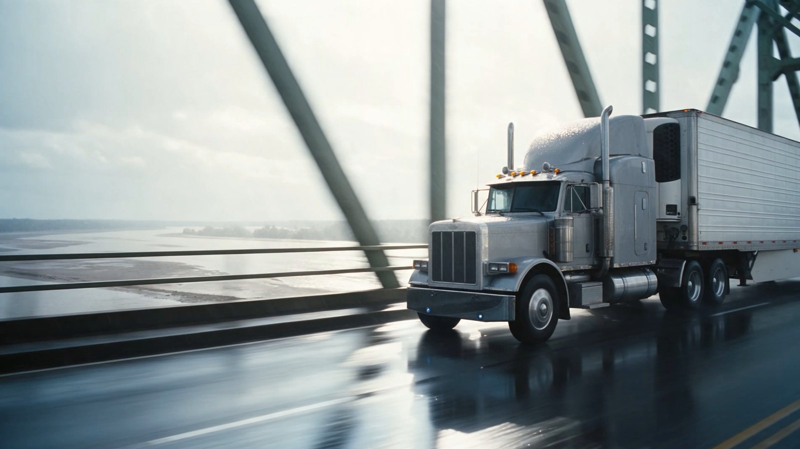
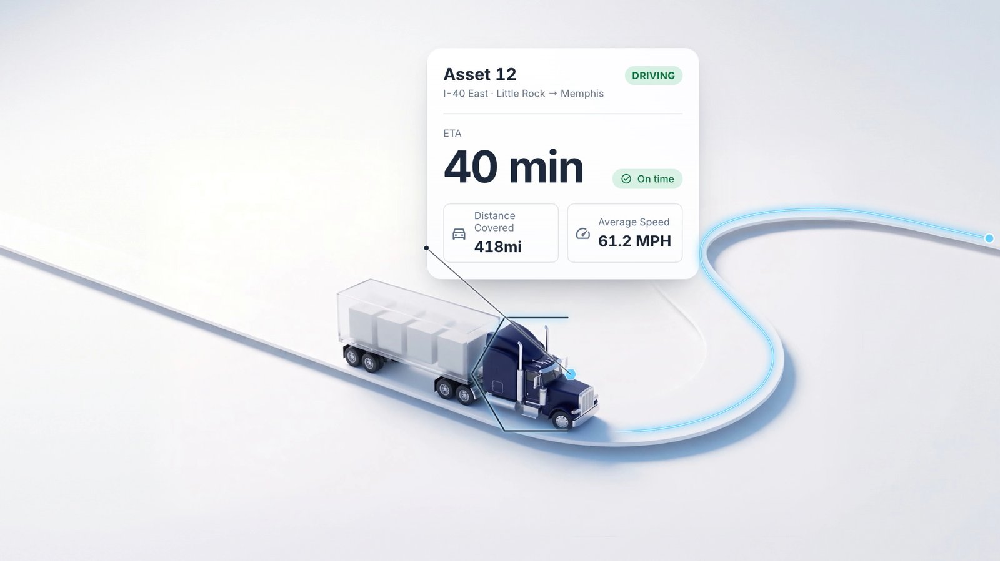
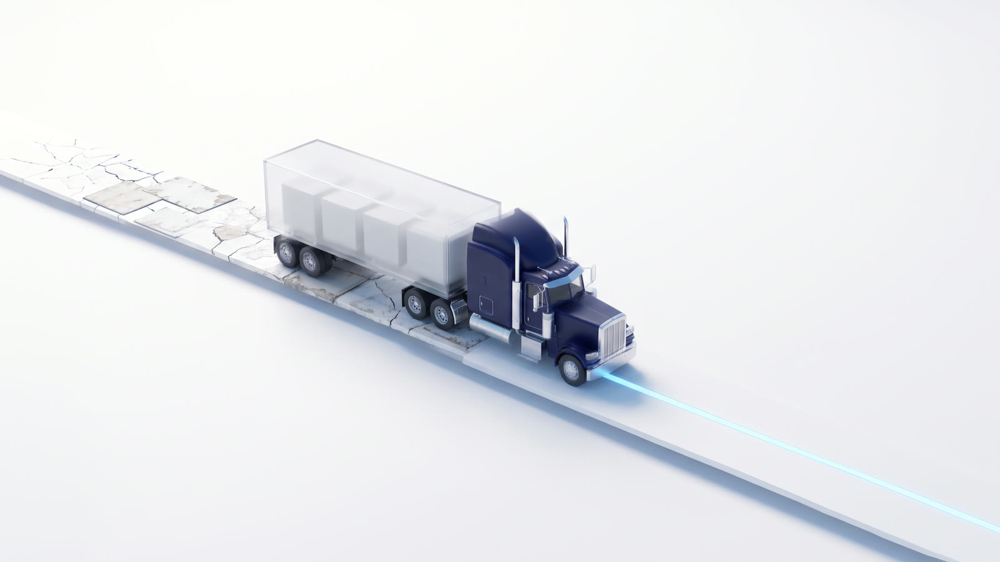

Dispatch and trip planning
Assign the day in one pass. Loads into trips, trips to drivers, planned once on one board with a record of every change.
Every truck on one map. Every load on one board. Carrier Companion is the view from above the dispatch floor, where you can see the whole day before it comes to you.
Most fleets run on a whiteboard, a handful of spreadsheets, a shared calendar and whatever the ops manager keeps in their head. Some run all of that on top of a system that was supposed to replace it. It works, as long as the one person who knows it all is at their desk. Carrier Companion puts the map, the board, the loads and trips, the drivers and equipment, the customers, documents, rates and invoices in one place.
Fewer tabs. Fewer spreadsheets. Fewer things only one person knows.
One platform for the people who run the fleet.
Assign the day in one pass. Loads into trips, trips to drivers, planned once on one board with a record of every change.
Know before it's asked. Where's the truck, when it delivers, whether the POD came in. The answer is on the screen when the customer calls, so the call is short.
From the quote to the invoice. Rates set ahead of time, truckload or LTL. The POD lands on the load. The invoice goes out from the same record, and driver pay settles from it too.
One app in the cab. What the driver marks on his phone shows up on your board. Pickups, deliveries, photos, signed PODs.
The tools you already run, connected. ELDs, fuel cards, tracking, your customers' EDI. Set up your way, all in the platform.
The questions hit before the coffee does. Where's the truck? Who's got Memphis? Did the POD come in? You answer from up here now.
A broker wants a price. The rate was set weeks ago, truckload or LTL, so the load lands on your board already priced.
Asset 5 delivers. The POD is on the load before anyone asks you for it. The invoice goes out behind it.
You lean back. The whiteboard is empty.
Many platforms try to run a brokerage and a fleet in one product. Carrier Companion does one job: the asset side. If you run a brokerage too, it's natively integrated with BrokerWare, built by the same team, so each side of the business keeps its own platform and loads move between them where they need to.

From 3PL Systems. For twenty years they've built transportation software for freight brokers. Their customers who also run trucks kept asking for a version built for the asset side. Carrier Companion is what they built, and those customers helped shape it.

Maybe the fleet runs on a whiteboard and a spreadsheet. Maybe it runs on a system that has been in the office longer than most of the drivers. Either way, what you do today has worked up to this point, and switching over to Carrier Companion is the part that has to go right. So it's the part we take most seriously. A small team that answers quickly, with no layers of approval in the way. A platform you set up yourself, in the interface, not through a vendor ticket. Your customers, drivers, equipment and rates carried over, with an audit trail behind everything from day one.

Come up and see. Thirty minutes. Your lanes on the screen.